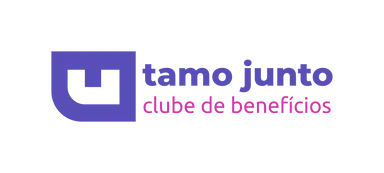

<ion-content>
  <div class="container">
    <div class="left"></div>
    <div class="right-content">
      <div class="img-container">
        
      </div>
      
      <div class="form-container">
        <h2>Recuperar Senha por Email</h2>
        <p class="subtitle">Digite seu email para receber uma nova senha temporária</p>
        
        <form [formGroup]="recuperarForm" class="form-group">
          <div class="input-group">
            <ion-label position="floating"
              [class.ng-invalid]="recuperarForm.get('email')?.touched && recuperarForm.get('email')?.invalid">
              Email
            </ion-label>
            <ion-input 
              formControlName="email" 
              fill="outline" 
              placeholder="seu@email.com" 
              type="email" 
              required>
            </ion-input>
            
            <div *ngIf="submitted || (recuperarForm.get('email')?.touched && recuperarForm.get('email')?.invalid)"
              class="error-messages">
              <small *ngIf="recuperarForm.get('email')?.errors?.['required']" class="text-error">
                <ion-icon name="alert-circle-outline"></ion-icon>
                O email é obrigatório.
              </small>
              <small *ngIf="recuperarForm.get('email')?.errors?.['email']" class="text-error">
                <ion-icon name="alert-circle-outline"></ion-icon>
                Digite um email válido.
              </small>
            </div>
          </div>

          <ion-button (click)="enviarEmail()" expand="full" [disabled]="spinner">
            <ng-container *ngIf="!spinner; else loadingSpinner">
              Enviar Nova Senha por Email
            </ng-container>
            <ng-template #loadingSpinner>
              <ion-spinner name="crescent"></ion-spinner>
            </ng-template>
          </ion-button>

          <div class="back-links">
            <a (click)="voltarParaLogin()" style="cursor: pointer;">
              <ion-icon name="arrow-back-outline"></ion-icon>
              Voltar para Login
            </a>
          </div>
        </form>
      </div>
    </div>
  </div>
</ion-content>